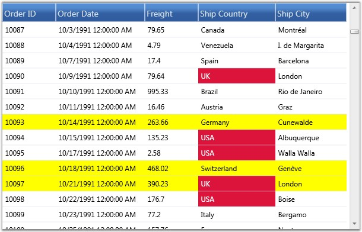

Grid Data control has in-built support for conditional formatting. This feature allows you to format grid cells based on a certain condition. This can be achieved by defining a GridDataConditionalFormat for the grid. Using this class, you can specify the filter criteria for the cells and the style to be applied for the filtered cells. Once these specifications are defined, the given styles are applied to only those cells that satisfy the condition specified.
Conditional formatting can be specified through the GridDataControl.ConditionalFormats property. This is an observable collection, into which you can add required number of formatters of type GridDataConditionalFormat. The filter criteria are specified by the GridDataConditionalFormat.Conditions property, which is a collection of GridDataCondition objects. The following table describes the important properties involved:
|
Property |
Description |
|
GridDataConditionalFormat | |
|
Conditions |
A collection of filter conditions. |
|
Style |
A GridDataStyleInfo that should be applied when the given conditions are met. |
|
ApplyStyleToColumn |
The name of the column to apply the specified style. By default, the style will be applied to the entire record row. Once this property is set, the cell corresponding to this column will be applied with the style. |
|
GridDataCondition | |
|
ColumnName |
Name of the column whose values should be checked. |
|
ConditionType |
This field corresponds to one of the following conditional operators: Equals Not Equals Less Than Less Than Or Equal Greater Than Greater Than Or Equal |
|
Value |
The value to compare. |
|
PredicateType |
Specifies the PredicateType, which is used to combine more than one condition. There are two types-AND, OR. |
Example
Now, let us consider an example for conditional formatting. The first conditional formatter in the below example specifies the filter criteria, “{Frieght} > 200 OR {Frieght} < 500”, which applies Yellow background to the cells satisfying this condition.
The second conditional formatter indicates the criteria–“{ShipCountry} Equals USA OR {ShipCountry} Equals UK”. If this condition is satisfied, then the given style, Crimson background and White foreground will be applied only to the corresponding record’s ShipCountry field, instead of being applied to the entire row.
|
[XAML]
<syncfusion:GridDataControl x:Name="dataGrid" AutoPopulateColumns="True" AutoPopulateRelations="False" ItemsSource="{StaticResource ordersSource}" ShowGroupDropArea="True"> <syncfusion:GridDataControl.ConditionalFormats> <syncfusion:GridDataConditionalFormat Name="C1"> <syncfusion:GridDataConditionalFormat.Style> <syncfusion:GridDataStyleInfo Background="Yellow" /> </syncfusion:GridDataConditionalFormat.Style> <syncfusion:GridDataConditionalFormat.Conditions> <syncfusion:GridDataCondition ColumnName="Freight" ConditionType="GreaterThan" Value="200" PredicateType="Or"/> <syncfusion:GridDataCondition ColumnName="Freight" ConditionType="LessThan" Value="500" PredicateType="And"/> </syncfusion:GridDataConditionalFormat.Conditions> </syncfusion:GridDataConditionalFormat> <syncfusion:GridDataConditionalFormat Name="C2" ApplyStyleToColumn="ShipCountry" > <syncfusion:GridDataConditionalFormat.Style> <syncfusion:GridDataStyleInfo Background="Crimson" Foreground="White" /> </syncfusion:GridDataConditionalFormat.Style> <syncfusion:GridDataConditionalFormat.Conditions> <syncfusion:GridDataCondition ColumnName="ShipCountry" ConditionType="Equals" Value="USA" PredicateType="Or"/> <syncfusion:GridDataCondition ColumnName="ShipCountry" ConditionType="Equals" Value="UK" PredicateType="Or"/> </syncfusion:GridDataConditionalFormat.Conditions> </syncfusion:GridDataConditionalFormat> </syncfusion:GridDataControl.ConditionalFormats> </syncfusion:GridDataControl> |
The following image shows the output of the above given code:

Figure 146: Conditional Formatting applied to GDC
The preceding screen shot shows a GDC applied with conditional formatting.